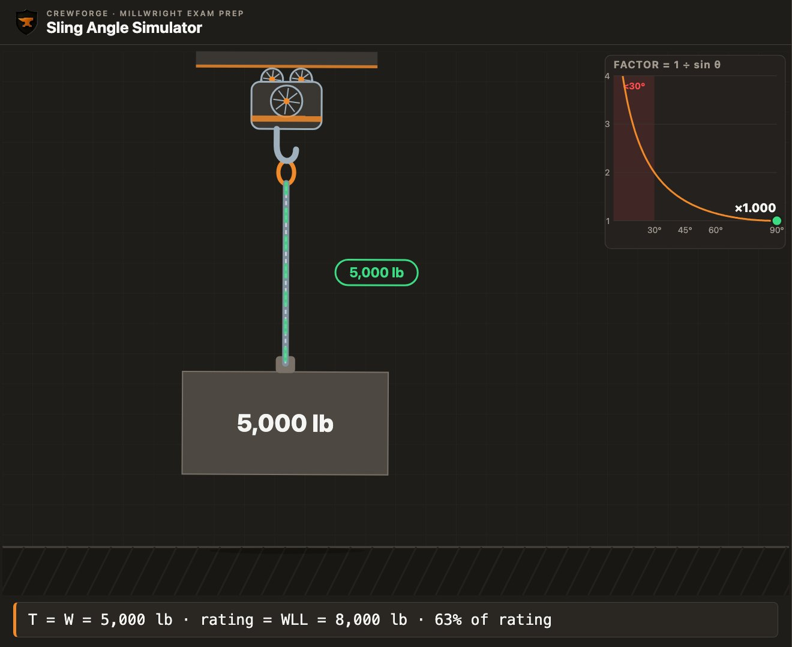
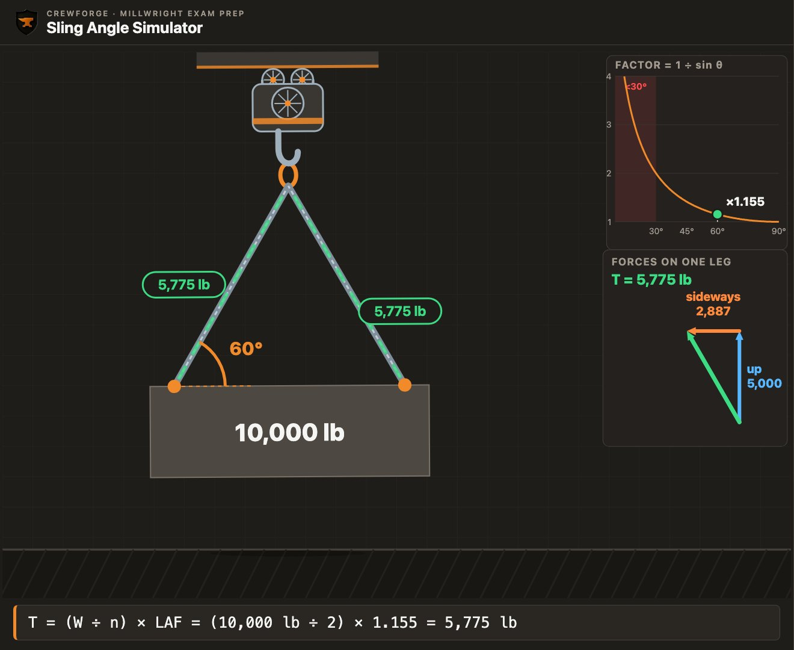
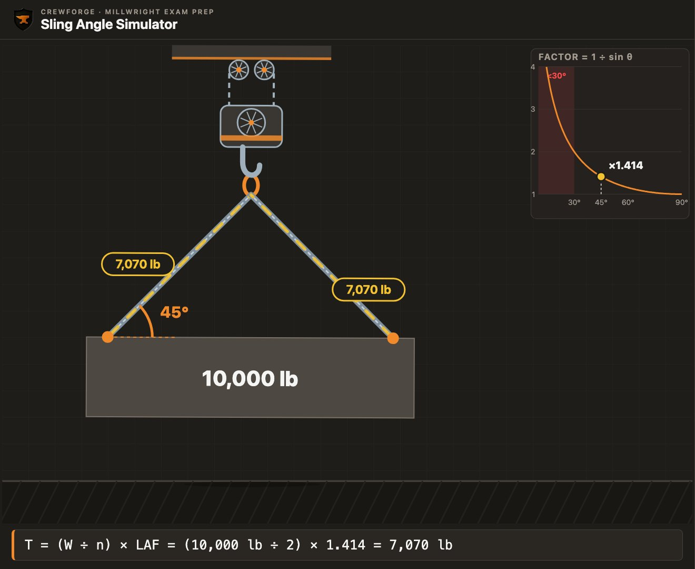
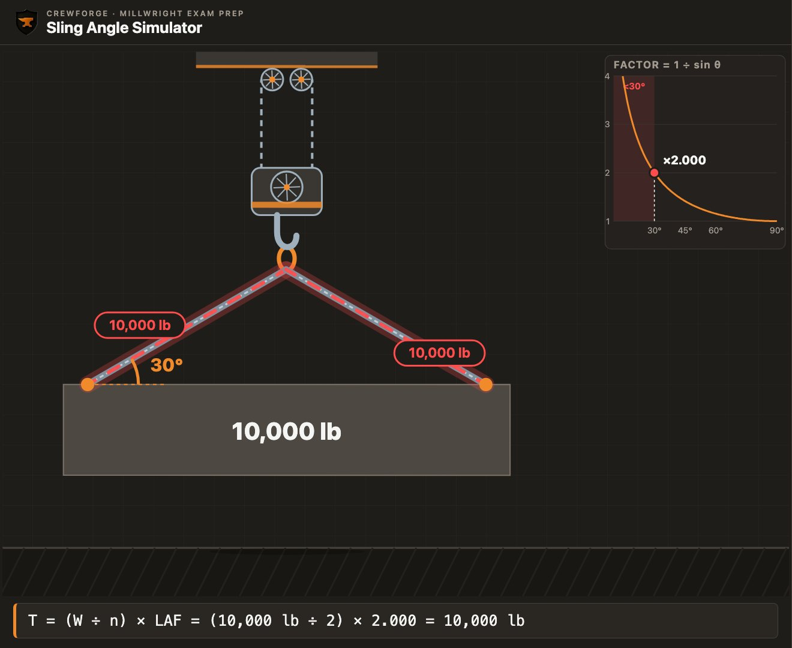
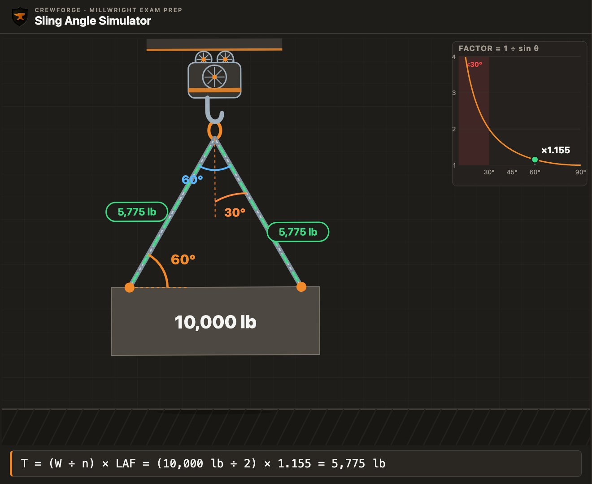
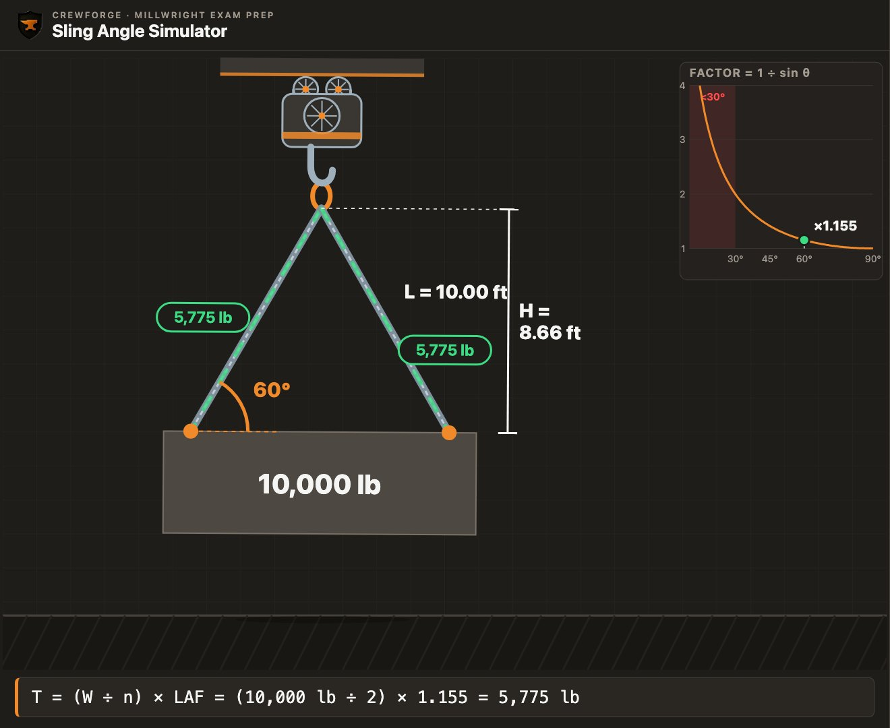
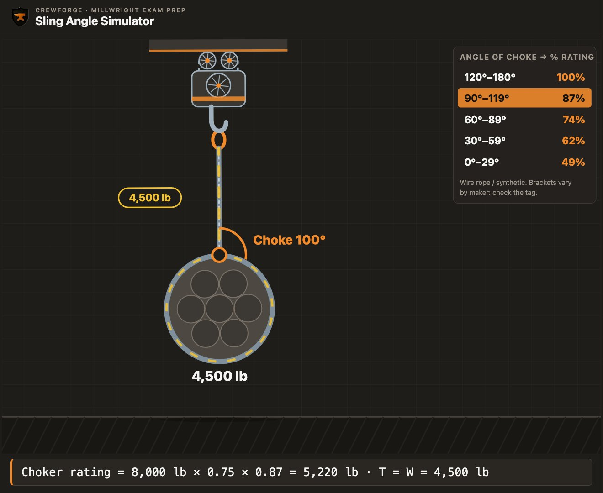
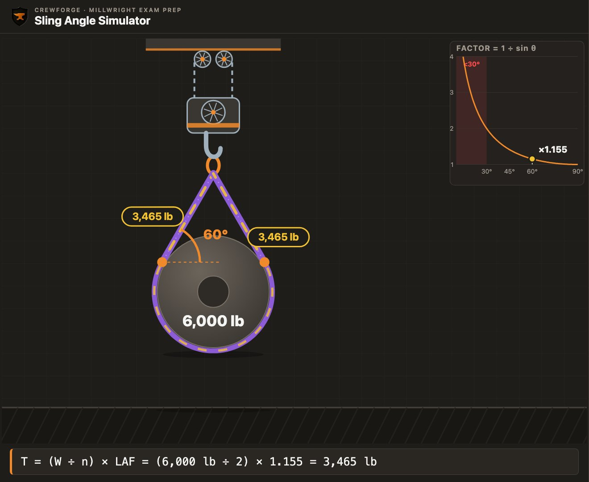
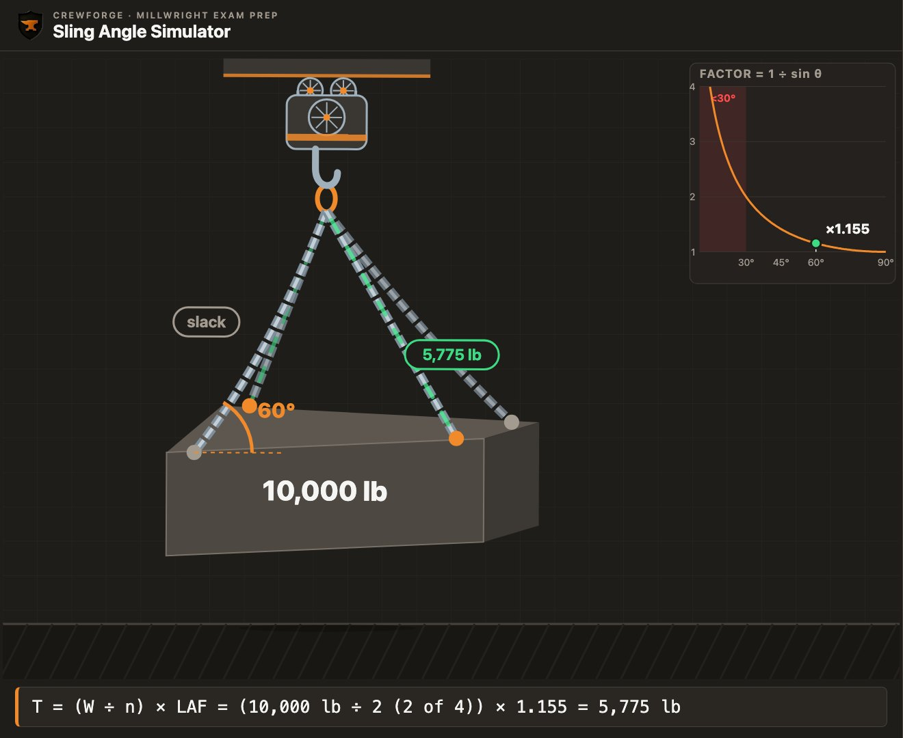

You've got a 10,000 lb load and two slings, each rated 8,000 lb. That's 16,000 lb of sling for a 10,000 lb load. It sounds like plenty. Rig those slings at 30° and each leg carries the full 10,000 lb: both slings are now 25 % overloaded. The rating didn't change. The angle did.
This chapter covers one of the most tested ideas in rigging: how the angle of a sling changes the load it carries. You'll learn why it happens, how to calculate it, how to measure it on the job, and how it changes with every common hitch. Work through the examples with a calculator. Then try the practice problems at the end without looking at the answers.
Every number in this chapter uses the same method as the Red Seal exam: the load angle factor rounded to three decimals, and loads rounded to the nearest pound or kilogram.
What you'll learn
- Explain what a sling's working load limit means, and why the design factor is not spare capacity.
- Explain, using force parts, why lowering the sling angle increases the tension in each leg.
- Calculate the load angle factor for any angle, and the tension in each leg, in imperial and metric.
- Convert an angle given from vertical, or an included angle, into the angle from horizontal.
- Find the load angle factor in the field with a tape measure (L ÷ H), and find H from the sling length and the distance between pick points.
- Work backwards from sling ratings to the most a rig can lift.
- Apply choker, basket and multi-leg bridle rules, including the angle-of-choke reduction and the two-leg rule.
- Find the load in each leg when the centre of gravity is off centre.
- Plan a complete two-leg lift and check every part of the load path.
Key terms
- Working load limit (WLL)
- The most a sling is rated to carry in a stated hitch, from the sling tag. Also called the rated load or rated capacity.
- Design factor
- Breaking strength divided by the rated load. It covers wear, shock loading and small errors. It is not extra capacity for you to use.
- Leg
- One part of a sling, or one sling, running from the hook to a pick point.
- Pick point
- A place on the load where a sling is attached: a lifting lug, eye bolt or a point the sling passes around.
- Master link
- The large link at the top of a bridle that sits in the hook and holds all the legs.
- Sling angle (θ)
- The angle between the sling leg and the horizontal. Every formula in this chapter uses this angle.
- Angle from vertical
- The angle between the sling leg and a vertical line. θ = 90° − angle from vertical.
- Included angle
- The full angle between two legs at the hook. θ = 90° − (included angle ÷ 2).
- Load angle factor (LAF)
- The multiplier that the sling angle puts on leg tension: LAF = 1 ÷ sin θ = L ÷ H.
- Tension (T)
- The pull along a sling leg.
- L and H
- L is the sling leg length. H is the height from the pick points up to the hook (the master link).
- Bridle
- Two, three or four legs from one master link to separate pick points.
- Choker hitch
- The sling passes around the load and through its own eye, closing on the load as it lifts.
- Angle of choke
- The angle the sling makes where it passes through its own eye in a choker hitch.
- Basket hitch
- The sling supports the load from underneath, with both eyes on the hook.
- D/d ratio
- The diameter the sling bends around (D) divided by the sling's own diameter (d). A small D/d lowers the sling's capacity.
- Two-leg rule
- Plan a three- or four-leg bridle as if only two legs carry the whole load.
- Centre of gravity (CG)
- The point where the whole weight of the load acts. The hook must be directly above it for a level lift.
- Spreader beam
- A beam below the hook that holds the slings apart so they hang closer to vertical.
What the sling rating means
Every calculation in this chapter ends with one question: is each leg within its rating?
Every sling has a tag. The tag gives the maker, the sling's size and material, and its working load limit (WLL) for the hitches it is rated for. Many tags also list the rating at 60° and 45° for bridles and baskets. If the tag is missing or can't be read, the sling is taken out of service until it is re-tagged by the maker or a qualified person.
The WLL is far below the force that would break the sling. The ratio between them is the design factor. Under ASME B30.9, alloy chain slings use a design factor of 4, and wire rope and synthetic slings use 5. A 5,000 lb wire rope sling would break somewhere near 25,000 lb when new.
That margin is not yours to use. It covers things you can't see or control: wear, small cuts, heat, shock loading when a load is jerked, and small errors in weight and angle. Rig to the WLL, every time.
| Sling material | Design factor (ASME B30.9) | Choker rating, % of vertical (typical) |
|---|---|---|
| Wire rope | 5 : 1 | 75 % |
| Alloy chain (grade 80 / 100) | 4 : 1 | 80 % (check the maker's chart) |
| Synthetic web and roundsling | 5 : 1 | 80 % |
Choker figures are typical values used in maker catalogues and in the CrewForge simulator. Always use the sling tag.
The rest of the chapter answers the question the tag can't: how much tension will this leg actually see in the rig you're about to build?
Why the angle adds tension
Most rigging overloads don't come from heavy loads. They come from low sling angles.
A sling can only pull along its own length. When two slings hang straight down, all of each leg's pull holds the load up, and each leg carries exactly half the load.

Now move the pick points apart, or shorten the slings, so the legs lean in toward the hook. Each leg still pulls along its own length, but now that pull points partly up and partly sideways.
Splitting the pull into two parts
Think of the tension in a leg as two parts working together. The vertical part holds the load up. The horizontal part pulls the pick point sideways, toward the other leg. The two parts and the tension form a right-angled triangle.
The vertical part never changes. However the sling is rigged, the legs together must hold up the whole load, so each leg's vertical part is the load divided by the number of legs: V = W ÷ n.
The lower the sling angle, the more of the leg's pull goes sideways. To keep the same vertical part, the tension has to rise. In the triangle, the vertical part is T × sin θ. So:
T = V ÷ sin θ = (W ÷ n) × (1 ÷ sin θ)
A 6,000 lb load hangs from a two-leg bridle. Each leg is at 60° from horizontal. Find the tension in each leg and the horizontal part of that tension.
Try it first, then show the working
- Vertical part of each leg: 6,000 ÷ 2 = 3,000 lb
- Load angle factor at 60°: 1 ÷ sin 60° = 1 ÷ 0.866 = 1.155
- Tension: 3,000 × 1.155 = 3,465 lb
- Horizontal part: V ÷ tan θ = 3,000 ÷ tan 60° = 3,000 ÷ 1.732 = 1,732 lb
Answer: 3,465 lb in each leg; each pick point is pulled about 1,732 lb toward the other.

- Two slings hang straight down from one hook to a 4,000 lb load. What is the tension in each?
Answer
2,000 lb. With vertical legs the factor is 1.000, so each leg carries exactly its share.
- As the sling angle gets lower, what happens to the vertical part of each leg's pull?
Answer
Nothing. The vertical part stays W ÷ n. Only the horizontal part and the tension grow.
The load angle factor
One formula answers almost every sling angle question on the exam.
The part of the formula that depends only on the angle is called the load angle factor (LAF). It tells you how many times larger the leg tension is than the leg's share of the load.
T = (W ÷ n) × LAF
Here θ is the sling angle measured from horizontal, W is the load and n is the number of legs that carry it. The factor is always 1 or more. At 90° (vertical) it is exactly 1.
| Angle from horizontal | Load angle factor | Tension per leg, 10,000 lb on two legs | Increase over vertical |
|---|---|---|---|
| 90° | 1.000 | 5,000 lb | 0 % |
| 85° | 1.004 | 5,020 lb | 0.4 % |
| 80° | 1.015 | 5,075 lb | 1.5 % |
| 75° | 1.035 | 5,175 lb | 3.5 % |
| 70° | 1.064 | 5,320 lb | 6.4 % |
| 65° | 1.103 | 5,515 lb | 10.3 % |
| 60° | 1.155 | 5,775 lb | 15.5 % |
| 55° | 1.221 | 6,105 lb | 22.1 % |
| 50° | 1.305 | 6,525 lb | 30.5 % |
| 45° | 1.414 | 7,070 lb | 41.4 % |
| 40° | 1.556 | 7,780 lb | 55.6 % |
| 35° | 1.743 | 8,715 lb | 74.3 % |
| 30° | 2.000 | 10,000 lb | 100 % |
Factors are 1 ÷ sin θ rounded to three decimals, the way exam answer keys use them.
Four factors are worth memorising: 90° = 1.000, 60° = 1.155, 45° = 1.414, 30° = 2.000. At 60° each leg carries about 15 % more than its share. At 45°, about 41 % more. At 30°, double.


An 8,000 lb motor is lifted with a two-leg bridle at 45° from horizontal. What is the tension in each leg?
Try it first, then show the working
- Share per leg: 8,000 ÷ 2 = 4,000 lb
- 45° → LAF 1.414
- 4,000 × 1.414 = 5,656 lb
Answer: 5,656 lb per leg
A 3,200 kg pump is lifted with a two-leg bridle at 45°. What is the tension in each leg, in kilograms and in kilonewtons?
Try it first, then show the working
- Share per leg: 3,200 ÷ 2 = 1,600 kg
- 45° → LAF 1.414
- 1,600 × 1.414 = 2,262 kg
- In kilonewtons: 2,262 × 9.81 ÷ 1,000 = 22.2 kN
Answer: 2,262 kg (22.2 kN) per leg
A 12,000 lb heat exchanger bundle is lifted on two legs at 50° from horizontal. Find the tension in each leg.
Try it first, then show the working
- Share per leg: 12,000 ÷ 2 = 6,000 lb
- LAF = 1 ÷ sin 50° = 1 ÷ 0.7660 = 1.305
- 6,000 × 1.305 = 7,830 lb
Answer: 7,830 lb per leg
- Find the load angle factor at 70°.
Answer
1 ÷ sin 70° = 1.064
- A 5,000 lb load hangs on two legs at 60°. What is the tension in each leg?
Answer
2,500 × 1.155 = 2,888 lb
- A 1,800 kg load hangs on two legs at 30°. What is the tension in each leg?
Answer
900 × 2.000 = 1,800 kg
Which angle did they give you?
Exam questions often give the angle from vertical, or the included angle, to see if you convert it.
There are three common ways to describe the same sling angle. The formulas in this chapter all need the angle from horizontal, so convert first.
θ = 90° − (included angle ÷ 2)
| Angle from horizontal | Angle from vertical | Included angle | LAF |
|---|---|---|---|
| 90° | 0° | 0° | 1.000 |
| 60° | 30° | 60° | 1.155 |
| 45° | 45° | 90° | 1.414 |
| 30° | 60° | 120° | 2.000 |
Useful pairs to recognise on sight.

An 8,000 lb load is lifted on two legs. Each leg is 25° from vertical. Find the tension in each leg.
Try it first, then show the working
- Convert: θ = 90° − 25° = 65° from horizontal
- LAF = 1 ÷ sin 65° = 1.103
- (8,000 ÷ 2) × 1.103 = 4,412 lb
Answer: 4,412 lb per leg
A 5,000 kg load is lifted on two legs with a 90° included angle at the hook. Find the tension in each leg.
Try it first, then show the working
- Convert: θ = 90° − (90° ÷ 2) = 45°
- 45° → LAF 1.414
- (5,000 ÷ 2) × 1.414 = 3,535 kg
Answer: 3,535 kg per leg
A question gives a 10,000 lb load on two legs, each 30° from vertical. A learner uses 30° in the formula. What answer do they get, and what is the right answer?
Try it first, then show the working
- Wrong: (10,000 ÷ 2) × LAF(30°) = 5,000 × 2.000 = 10,000 lb
- Right: θ = 90° − 30° = 60°, so 5,000 × 1.155 = 5,775 lb
Answer: The right answer is 5,775 lb. The trap answer, 10,000 lb, is almost always one of the choices.
- A leg is 40° from vertical. What is the sling angle from horizontal?
Answer
90° − 40° = 50°
- The included angle is 120°. What is the sling angle, and the load angle factor?
Answer
90° − 60° = 30°; LAF = 2.000
Measuring the angle on the job
In the field you rarely have a protractor, but you always have a tape.
In the right-angled triangle formed by a sling leg, the sling is the long side (L) and the height from the pick point up to the hook is the upright side (H). So sin θ = H ÷ L, and the load angle factor comes straight from two measurements:
LAF = 1 ÷ sin θ = L ÷ H
If you can't measure H directly, find it from the sling length and the distance between the pick points (S). For a symmetric two-leg bridle, each leg covers half of S sideways, so by Pythagoras:

Two 10 ft slings lift a 7,200 lb load from pick points 10 ft apart. Find the load angle factor and the tension in each leg.
Try it first, then show the working
- H = √(10² − 5²) = √75 = 8.660 ft
- LAF = L ÷ H = 10 ÷ 8.660 = 1.155 (that's 60°)
- (7,200 ÷ 2) × 1.155 = 4,158 lb
Answer: LAF 1.155; 4,158 lb per leg
Two 3 m slings lift a 2,000 kg load from lugs 4 m apart. Find H, the load angle factor, the sling angle and the tension in each leg.
Try it first, then show the working
- H = √(3² − 2²) = √5 = 2.236 m
- LAF = 3 ÷ 2.236 = 1.342
- Sling angle: sin θ = 2.236 ÷ 3, so θ = 48.2°
- (2,000 ÷ 2) × 1.342 = 1,342 kg
Answer: H = 2.24 m; LAF 1.342; about 48°; 1,342 kg per leg
Headroom and shorter slings
When there isn't enough headroom, it's tempting to use shorter slings. Shorter slings on the same pick points make the angle lower, and the tension goes up.
The 7,200 lb load above won't clear an obstruction with 10 ft slings, so someone swaps in 7 ft slings on the same pick points, 10 ft apart. Find the new tension in each leg.
Try it first, then show the working
- H = √(7² − 5²) = √24 = 4.899 ft
- LAF = 7 ÷ 4.899 = 1.429 (about 44°)
- (7,200 ÷ 2) × 1.429 = 5,144 lb
- Compare: 4,158 lb with 10 ft slings
Answer: 5,144 lb per leg, 24 % more than with the longer slings
- A sling is 8 ft long and the hook is 6.4 ft above the pick points. What is the factor?
Answer
8 ÷ 6.4 = 1.250
- Two 4 m slings, lugs 2 m apart. What is H?
Answer
√(16 − 1) = √15 = 3.87 m
Is the rig strong enough?
On the job the question is usually not 'what is the tension?' but 'can these slings make this lift?'
A rig is within its rating when the tension in every leg is no more than that leg's WLL for the hitch used. You can check it two ways: work out the tension and compare it with the WLL, or work backwards from the WLL to the most the rig can lift.
Most a two-leg bridle can lift = 2 × WLL ÷ LAF
Two wire rope slings, each rated 5,000 lb vertical, are rigged as a bridle at 45°. What is the most they can lift? Can they lift a 7,500 lb load?
Try it first, then show the working
- Most the rig can lift: 2 × 5,000 ÷ 1.414 = 7,072 lb
- 7,500 lb is more than 7,072 lb
Answer: 7,072 lb. No: the 7,500 lb load would overload both legs at 45°.
The crib has wire rope slings rated 3,200 lb, 4,800 lb and 6,400 lb. You need a two-leg bridle at 60° for a 9,200 lb load. Which slings do you use?
Try it first, then show the working
- Share per leg: 9,200 ÷ 2 = 4,600 lb
- 4,600 × 1.155 = 5,313 lb
- 4,800 lb is below 5,313 lb, so it's not enough
- 6,400 lb is above it
Answer: The 6,400 lb slings: each leg sees 5,313 lb, 83 % of its rating.
- Two 2,000 kg synthetic slings in a bridle at 60°. What is the most they can lift?
Answer
2 × 2,000 ÷ 1.155 = 3,463 kg
Chokers, baskets and multi-leg bridles
The hitch changes the sling's capacity before the angle is even considered.
Choker hitch
In a choker hitch the sling passes around the load and back through its own eye. The sling bends sharply where it passes through the eye, so a choker is rated lower than a vertical hitch: typically 75 % for wire rope and 80 % for synthetic slings. For alloy chain, use the maker's chart.
If the choke is pulled down so the angle of choke is less than about 120°, the rating drops again. A choke left to settle on its own usually ends up near 135°, so no further reduction applies.
| Angle of choke | % of choker rating |
|---|---|
| 120°–180° | 100 % |
| 90°–119° | 87 % |
| 60°–89° | 74 % |
| 30°–59° | 62 % |
| 0°–29° | 49 % |
Angle-of-choke reductions as published by the Wire Rope Technical Board. Brackets vary slightly between makers.

A wire rope sling rated 6,000 lb vertical is used as a choker. The choke is pulled down to 95°. What is its capacity? What would it be if the choke settled at 135°?
Try it first, then show the working
- Choker rating: 6,000 × 0.75 = 4,500 lb
- 95° is in the 90°–119° row: 87 %
- 4,500 × 0.87 = 3,915 lb
- At 135° (120°–180° row): 4,500 × 1.00 = 4,500 lb
Answer: 3,915 lb at 95°; 4,500 lb at 135°
Basket hitch
In a basket the sling supports the load from underneath, with both eyes on the hook. With both legs vertical, two parts of sling share the load, so a basket is rated at twice the vertical rating.
Once the legs are angled, the load angle factor applies exactly as it does for a bridle. The load must also be large enough in diameter for the sling to bend around it without losing strength: check the D/d ratio on the maker's chart.
Basket, angled legs: capacity = 2 × WLL ÷ LAF

A synthetic sling rated 4,000 lb vertical is used as a basket with the legs at 60°. What is its capacity?
Try it first, then show the working
- Vertical basket would be 2 × 4,000 = 8,000 lb
- Angled: 8,000 ÷ 1.155 = 6,926 lb
Answer: 6,926 lb, not the 8,000 lb a vertical basket would allow
Three- and four-leg bridles: the two-leg rule
It seems a four-leg bridle should share the load four ways. On a rigid load it doesn't. The legs are never exactly the same length, the pick points are never exactly level, and the centre of gravity is never exactly centred. In practice the weight shifts onto two legs while the others carry little or nothing.
The conservative practice taught in Canadian rigging courses, and used on the Red Seal exam, is to plan a three- or four-leg bridle as if only two legs carry the whole load.

A 16,000 lb skid is lifted with a four-leg bridle at 50° from horizontal. Using the two-leg rule, what must each leg be rated for?
Try it first, then show the working
- Two legs carry the load: 16,000 ÷ 2 = 8,000 lb
- 50° → LAF 1.305
- 8,000 × 1.305 = 10,440 lb
Answer: At least 10,440 lb per leg. Dividing by four would give half that, and overload the rig.
When the centre of gravity isn't centred
If the centre of gravity is closer to one pick point, that leg carries more. With vertical legs, each leg's share is found from the distances, the same way you'd balance a beam: the leg nearer the CG carries the larger share.
Leg B = W × a ÷ (a + b)
A 6,000 lb load is lifted from two pick points 10 ft apart. The centre of gravity is 4 ft from pick point A. How much does each vertical leg carry?
Try it first, then show the working
- a = 4 ft (CG to A), b = 6 ft (CG to B)
- Leg A = 6,000 × 6 ÷ 10 = 3,600 lb
- Leg B = 6,000 × 4 ÷ 10 = 2,400 lb
- Check: 3,600 + 2,400 = 6,000 lb
Answer: Leg A 3,600 lb, leg B 2,400 lb. Size both slings for the heavier leg.
- A wire rope sling rated 2,000 kg is used as a choker with the choke settled at 140°. What is its capacity?
Answer
2,000 × 0.75 = 1,500 kg (no angle-of-choke reduction above 120°)
- A four-leg bridle lifts 8,000 kg at 45°. Using the two-leg rule, what is the tension in each leg?
Answer
(8,000 ÷ 2) × 1.414 = 5,656 kg
Putting it together: planning a two-leg lift
On the job, sling angles are one step in a lift plan, not a math problem on its own.
Here is the order a millwright works through for a routine two-leg lift. Your site's lift plan and procedures come first; this is the thinking behind them.
- Know the weight: nameplate, drawings or the maker's data. Never guess.
- Find the centre of gravity and choose pick points on either side of it.
- Check the pick points: lugs and eye bolts rated for the load and for the angle of pull.
- Choose the hitch, then work out the sling angle from L and H (or L and S).
- Calculate the tension in each leg with the load angle factor.
- Choose slings and hardware with a WLL at or above that tension for the hitch used.
- Check headroom: hook height, sling length and the height the load must clear.
- Confirm the plan with your lift supervisor and signal person, and lift a few inches first to check balance.
You're replacing a 4,600 kg gearbox. Its two lifting lugs are 1.8 m apart, centred on the CG. The crib has synthetic slings rated 3,000 kg in 2.0 m and 1.5 m lengths. The crane has room for the hook up to 2.0 m above the lugs. Which slings do you use?
Try it first, then show the working
- 2.0 m slings: H = √(2.0² − 0.9²) = 1.786 m, which fits under 2.0 m
- LAF = 2.0 ÷ 1.786 = 1.120 (about 63°)
- Tension: (4,600 ÷ 2) × 1.120 = 2,576 kg, 86 % of the 3,000 kg rating
- 1.5 m slings: H = √(1.5² − 0.9²) = 1.200 m; LAF = 1.5 ÷ 1.200 = 1.250 (about 53°)
- Tension: 2,300 × 1.250 = 2,875 kg, 96 % of the rating
Answer: Use the 2.0 m slings: 2,576 kg per leg. The 1.5 m slings stay within rating but leave little margin (96 %), and save headroom you don't need.
Key formulas
| Load angle factor | LAF = 1 ÷ sin θ = L ÷ H |
| Tension per leg | T = (W ÷ n) × LAF |
| Angle conversions | θ = 90° − from vertical; θ = 90° − included ÷ 2 |
| Height from pick-point distance | H = √(L² − (S ÷ 2)²) |
| Most a two-leg rig can lift | 2 × WLL ÷ LAF |
| Choker | WLL × 75 % (wire rope) or 80 % (synthetic) × angle-of-choke % |
| Basket | 2 × WLL vertical; 2 × WLL ÷ LAF angled |
| Three- and four-leg bridles | n = 2 (two-leg rule) |
| Off-centre CG, vertical legs | Leg A = W × b ÷ (a + b) |
Where people lose marks
- Using the angle from vertical, or the included angle, as the sling angle. The formula needs the angle from horizontal. Convert first: 90° minus the angle from vertical, or 90° minus half the included angle.
- Dividing by four on a four-leg bridle. On a rigid load, two legs end up carrying the weight. Plan for two.
- Using H ÷ L instead of L ÷ H. The factor is never less than 1. If it is, flip it.
- Forgetting the choker rating, or the angle-of-choke reduction. A choker starts at 75 % (wire rope) or 80 % (synthetic) of vertical, and drops again below a 120° choke.
- Claiming the full 200 % basket rating when the basket legs are angled. Twice the vertical rating applies only with vertical legs. Divide by the load angle factor once they're angled.
- Calculator in radians. sin 30 must give 0.5. If it doesn't, switch to degrees.
- Checking the slings but not the hardware. Shackles, lugs and eye bolts see the leg tension, often at an angle. Check them too.
Simulator challenge
Open the simulator: rig a 10,000 lb load on two 8,000 lb slings and find the lowest sling angle that keeps each leg within rating. Then switch to a four-leg chain bridle with the two-leg rule and see what changes.
Practice quiz
7 exam-style questions. Pick an answer to see the worked solution and the simulator set up exactly as the question describes.
Practice problems
Show your working on paper, then check it.
A 14,000 lb load is lifted on two legs at 55° from horizontal. Find the tension in each leg.
Show the working
- LAF = 1 ÷ sin 55° = 1.221
- (14,000 ÷ 2) × 1.221 = 8,547 lb
Answer: 8,547 lb
A 2,500 kg load hangs on two legs, each 40° from vertical. Find the tension in each leg.
Show the working
- θ = 90° − 40° = 50°
- LAF 1.305
- 1,250 × 1.305 = 1,631 kg
Answer: 1,631 kg
Two 10 ft slings lift a 6,000 lb load. The hook is 8 ft above the pick points. Find the tension in each leg.
Show the working
- LAF = 10 ÷ 8 = 1.250
- 3,000 × 1.250 = 3,750 lb
Answer: 3,750 lb
A wire rope sling rated 5,000 kg vertical is used as a choker with a 70° angle of choke. What is its capacity?
Show the working
- Choker: 5,000 × 0.75 = 3,750 kg
- 70° → 74 %
- 3,750 × 0.74 = 2,775 kg
Answer: 2,775 kg
A four-leg bridle lifts a 20,000 kg module with legs at 60°. Using the two-leg rule, what must each leg be rated for?
Show the working
- Two legs: 20,000 ÷ 2 = 10,000 kg
- 10,000 × 1.155 = 11,550 kg
Answer: 11,550 kg (11.55 t)
A sling rated 6,000 lb vertical is used as a basket with the legs at 45°. What is its capacity?
Show the working
- 2 × 6,000 ÷ 1.414 = 8,487 lb
Answer: 8,487 lb
Two 3,000 lb slings are rigged at 30° to lift a 5,500 lb load. Is the lift within rating?
Show the working
- Most the rig can lift: 2 × 3,000 ÷ 2.000 = 3,000 lb
- 5,500 lb is far above 3,000 lb
- Each leg would see 2,750 × 2.000 = 5,500 lb
Answer: No. Each leg would carry 5,500 lb on a 3,000 lb sling, and 30° is already the lowest angle allowed without an engineered plan.
A 9,000 lb load has its centre of gravity 3 ft from pick point A and 6 ft from pick point B. With vertical legs, how much does each leg carry?
Show the working
- Leg A = 9,000 × 6 ÷ 9 = 6,000 lb
- Leg B = 9,000 × 3 ÷ 9 = 3,000 lb
Answer: Leg A 6,000 lb, leg B 3,000 lb
Printable textbook chapter
MW-001 · Sling Angles and Load Angle Factors
This whole lesson as a printable chapter, formatted to be light on toner: every explanation, diagram and worked example, the key formulas, common mistakes, practice questions with full answers at the back, and sources. Every lesson in the program comes with one, and each level's chapters build into a full CrewForge textbook.
That was one lesson. Level 1 has 75 planned.
Every lesson in the program comes like this, plus scored simulator challenges, unit tests, a timed level exam, progress tracking and a certificate of completion. Founding members get every level as it's released, at the lowest price.
Sources
- Red Seal Occupational Standard, Industrial Mechanic (Millwright), 2026: Tasks B-9 and B-10
- IHSA (Ontario), Hoisting and Rigging Safety Manual: sling angles, load angle factors, multi-leg bridles, centre of gravity
- ASME B30.9, Slings: design factors, identification (tags), and horizontal sling angles below 30° (cited by topic; as summarised in Lift-All and Mazzella sling user guides)
- Wire Rope Technical Board, Wire Rope Sling Users Manual: choker efficiency and angle-of-choke reduction table
- Web Sling and Tie Down Association (WSTDA) and sling maker catalogues: synthetic sling choker and basket ratings, D/d
- Load angle factors computed as 1 ÷ sin θ and rounded to three decimals; every worked example checked against the CrewForge sling angle simulator's calc()
Exam preparation, not a procedure. Always check the sling tag, the manufacturer's charts and your lift plan.